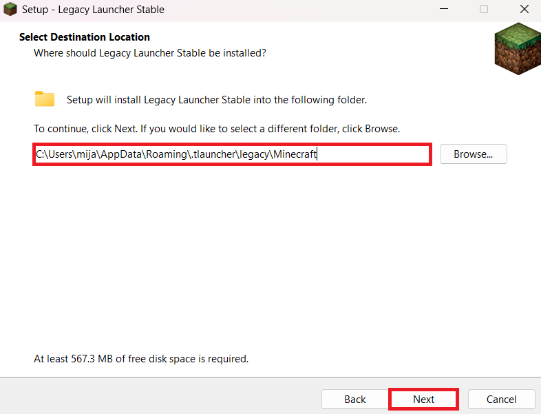
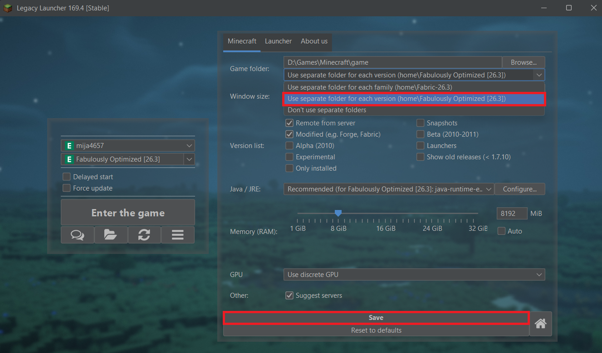
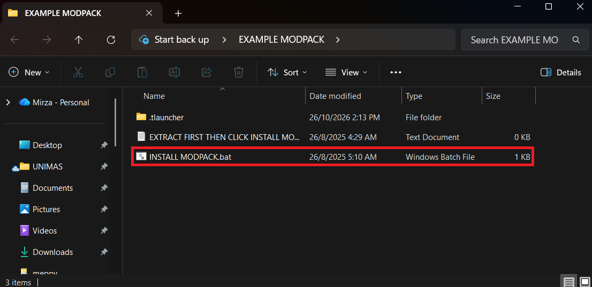
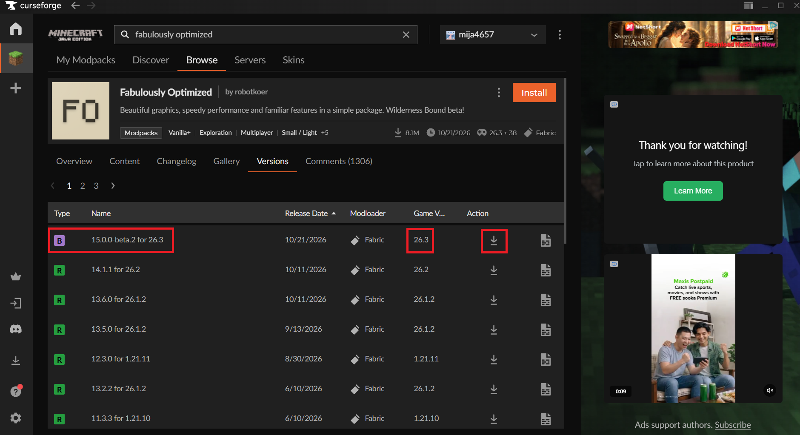
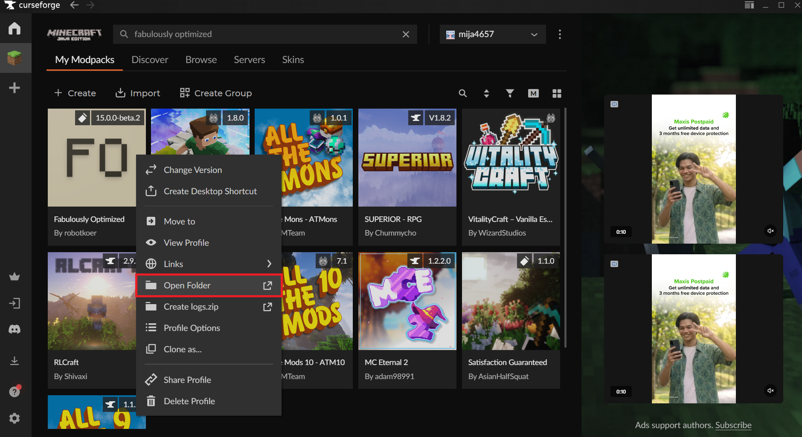
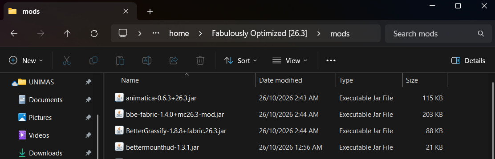

Mija's Dedicated Minecraft SMP
Welcome to the official multiplayer hub. Explore custom survival worlds, trade with active players, build epic bases, and experience high-performance, low-latency gameplay on PaperMC.
Real-Time Server Status
Live telemetry fetched directly via mcstatus.io API. Automatically updates every 60 seconds.
Server Connection Status
Paper Server • Java Edition
Logged In Players
Real-time player roster
Modpack Setup Guide
Select your edition below. Unofficial players can use our automated 1-click Legacy Launcher installer, while official account owners can set up via CurseForge with our extra mods pack.
Install Legacy Launcher (Default Location)
If you do not have Legacy Launcher installed, download it from the official site. Important: Keep the default installation directory (do not change the install folder), so our automated script can locate it without manual pathing.

Configure Game Folder in Launcher Preferences
Open Legacy Launcher. In the bottom-left corner or top bar, click the Hamburger Menu (☰) and select Launcher & Game Preferences.

Download Modpack ZIP from Google Drive
Download the official server modpack archive from our Google Drive repository. The ZIP contains all required mod files, shaders, configuration profiles, and the automated batch installer.
Extract the ZIP & Run INSTALL MODPACK.bat
Once the ZIP file is downloaded, right-click and extract it using Windows Explorer, 7-Zip, or WinRAR. Open the extracted folder and double-click to execute:
INSTALL MODPACK.bat
The script automatically detects your Legacy Launcher versions directory and installs the client mods, loaders, and server settings automatically.

Select Modpack Profile & Connect
Reopen Legacy Launcher. From the version dropdown list, select the newly installed Mija SMP Modpack profile and click Play. Once in the main menu, go to Multiplayer and connect:
mija.ddns.net
Install CurseForge App & Base Modpack
Open the CurseForge App on your PC. Click on the Minecraft tab, search for the server's base modpack, and click Install to create your profile.

Download Extra Custom Mods Pack (.zip)
Because stock CurseForge does not include our server-exclusive additions (custom balance mods, voice chat integration, and optimization patches), download our Extra Mods ZIP archive from Google Drive:
Open Profile Folder in CurseForge
In CurseForge, right-click on your installed modpack profile card (or click the three vertical dots ⋮ menu next to the "Play" button), then select "Open Folder".

Paste Extra Mods into the mods Directory
Inside the opened folder, locate and open the mods folder. Extract
or copy the .jar files from the downloaded Extra Mods ZIP
directly into this mods folder.
...\Instances\[Modpack Name]\mods\

Launch via CurseForge & Join Server
Return to CurseForge and click Play. Once Minecraft launches, open the Multiplayer menu and join the server address:
mija.ddns.net
Allocate 4GB - 6GB of RAM
Modpacks require more memory than vanilla Minecraft. In your launcher's Java/memory settings, set RAM allocation to at least 4096 MB (4GB) or 6144 MB (6GB) for optimal 60+ FPS.
Java Runtime Compatibility
Both launchers bundle an official compatible Java runtime. If you encounter exit code 1 or crashes, ensure Java 17 or Java 21 is installed and selected in launcher settings.
Need Help Setting Up?
If the batch installer gives an error or mods don't load, reach out on WhatsApp or Mirza Rahimi's Portal Hub for instant assistance from the server team.
How to Join Mija's SMP
Follow these 4 simple steps to connect to the server within minutes.
Launch Minecraft Java
Open Minecraft Java Edition from your launcher. We recommend version 1.20 or newer. Vanilla and modded Fabric clients with Sodium/Iris work seamlessly.
Open Multiplayer Menu
From the Minecraft main menu, select Multiplayer. Click Add Server at the bottom right of the server list.
Enter Server Address
Set Server Name to Mija SMP. In the Server Address field, type or paste:
mija.ddns.net
Copy
Join and Play!
Click Done, select Mija's server from your list, and press Join Server. Welcome to the adventure!
Built for Performance & Fun
A thoughtfully balanced survival experience engineered for smooth, lag-free gameplay.
PaperMC Optimized
Powered by Paper 26.3 with optimized entity ticking and memory management for a consistent 20 TPS experience.
Custom World Generation
Explore stunning landscapes, towering peaks, deep cavern systems, and lush biomes designed to make building rewarding.
Anti-Grief Protection
Your builds and chests are protected. Active rollback tooling and moderation keep your creations safe around the clock.
Friendly Community
Join a mature, cooperative group of players. Work together on megabuilds, trade items, or build your solo sanctuary.
Server Rules & Etiquette
To keep the server enjoyable for all players, please adhere to these core rules:
No Griefing or Stealing
Do not destroy or modify other players' builds without permission. Taking items from unlocked chests that are not yours is strictly prohibited.
Fair Play • No Cheating
X-ray packs, hacked clients, automated cheat scripts, or movement hacks are not allowed. Quality of life client mods (OptiFine, Sodium, MiniHUD) are welcome.
Respectful Communication
Treat fellow members with respect. Hate speech, harassment, excessive spam, or toxicity in global chat will result in an immediate mute or ban.
Respect Player Territory
Leave reasonable space between your base and your neighbors' land unless mutually agreed upon. Don't claim land right next to an existing town uninvited.
Lag-Conscious Redstone
Please design redstone contraptions with on/off switches and avoid infinite hopper clocks or massive entity farms that cause server-wide tick drops.
Follow Staff Direction
Admins and moderators are here to help keep gameplay fair. If an issue arises, contact staff on WhatsApp or via our portal channels.
Ready to Begin Your Adventure?
Grab your pickaxe, copy the server address, and hop onto Mija's SMP today.